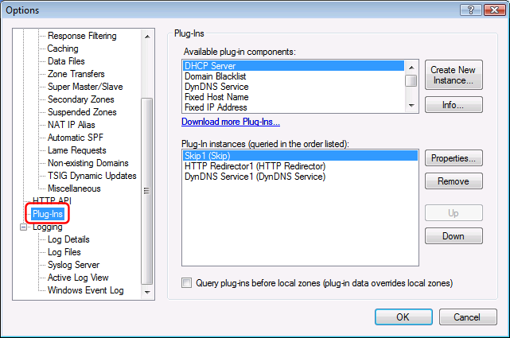
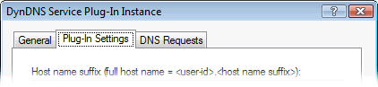

Simple DNS Plus has a plug-in system for providing additional services (such as DHCP) and for fetching DNS data from various sources such as databases and custom programs and scripts.
A list of available plug-ins is available at https://simpledns.plus/plugins.
Plug-ins user interface
Plug-ins are instantiated from the Options dialog / Plug-In section:

The plug-in instance dialog has (up to) 3 tabs:
1) The "General" tab:

- Plug-in instance display name
This name will be displayed in the plug-in instances list, in the logs, and in the plug-in View tab. - Listed IP addresses
- Perform DNS recursion for IP addresses listed by this plug-in
When enabled, Simple DNS Plus will resolve DNS requests received from IP addresses listed by this plug-in - even if they are not listed in the Options dialog / DNS / Recursion section.
This option is only available for some plug-ins - typically those that in some way lists IP addresses.
(Note to developers: ths option is enabled for plug-ins that implement the IListsIPAddress interface). - Whitelist IP addresses listed by this plug-in from all DNSBLs
When enabled, Simple DNS Plus will respond to any DNS request for A-records for names starting with a reversed IP address, that is listed by this plug-in, with a "name does not exist" error code.
When a client computer (who's IP address is listed by this plug-in) sends an e-mail to a local e-mail server which is using this same Simple DNS Plus server, and this e-mail server looks up the sender's IP address (the client computer) in some DNSBL list, this option ensures that the result is always "not black listed".
This can be useful because dynamic IP address ranges are often black listed as e-mail senders.
This option is only available for some plug-ins - typically those that in some way lists IP addresses.
(Note to developers: ths option is enabled for plug-ins that implement the IListsIPAddress interface).
- Perform DNS recursion for IP addresses listed by this plug-in
- Threading
- Max. parallel threads
Specify how many threads may access the plug-in in parallel.
This option is only available for plug-ins that implement multi-threading.
Max. threads in queue
The maximum number of threads (other DNS requests) that may be queued to wait for other threads to finish processing in the plug-in.
- Max. parallel threads
2) The "Plug-in Settings" tab.
The content of this tab is defined by the each individual plug-in type:
(This tab is not available for plug-ins which do not have any unique settings)

3) The "DNS Requests" tab
On this tab it is possible to limit which DNS requests are processed by the plug-in.
(This tab is not available for plug-ins which do not handle DNS requests)
By default all DNS requests are processed by the plug-in, but if the plug-in does a lot of work for each request (such as database lookups) it might by a good idea to limit this to specific domains, IP ranges, record types, etc. in order to optimize performance.

You can set "Process DNS requests" to either "Always", "Never", or "Only when...".
With the "Only when..." option, you can configure a list of "rules" which determine what DNS requests are process or not.
Available "rules" are:
- Sender's IP address
- is a specific IP address
- is in a list of IP addresses / ranges / subnets
- is an IPv4 address
- is an IPv6 address
- is listed in another plug-in
- Requested domain name
- is a specific domain name (or wildcard name)
- is in a list of domain names / wildcard names
- is listed in another plug-in
- Requested record type is a specific type
- Reverse lookup IP address
- is a specific IP address
- is in a list of IP addresses / ranges / subnets
- is an IPv4 address
- is an IPv6 address
- is listed in another plug-in
- Request is DNSBL lookup
- DNSBL lookup IP address
- is a specific IP address
- is in a list of IP addresses / ranges / subnets
- is listed in another plug-in
- Sender requests recursion (RD)
- Server offers recursion (RA)
- Date/time is (see this article)
- Sublist of rules
- Rule from plug-in
You can reverse the result of a selected rule by clicking the [Not] button.
Rules are evaluated in the listed order - you can re-arrage this using the Up/Down button.
Views
Some plug-ins will have their own "View" - a dockable sub-window of the Simple DNS Plus main window:

Why plug-ins?
Users often ask us to implement different new features in Simple DNS Plus, and we are always very happy to get these suggestions.
However some of the suggested features are things that only a smaller group of users would be interested in, and while it might be a really cool feature for those users, it might be a distraction to others.
Of course adding a new feature also makes the software more complex and gives it a larger "attack surface".
So for version 5.0 we decided to implement a plug-in system, allowing us (and 3rd parties) to develop new features without cluttering the base product, and allowing users to select which of these features they want - or don't want.
Some of the benefits of this model are:
- Simpler user interface; settings for un-used plug-ins are not in the way.
- Allows us to implement new features without touching the core DNS server code.
- Less memory usage; only selected plug-in modules are loaded into memory.
- Smaller attack surface; evil doers can't attack plug-ins that aren't loaded.
- Great for asynchronous lookups; a plug-in lookup runs in a separate thread not holding up other DNS requests.
- Allows users and 3rd parties to develop their own plug-ins (see this article)
- Allows separate distribution of selected plug-in modules and required libraries (reducing size of main installer).
Open Architecture
The plug-in architecture open for users and 3rd parties interested in developing their own plug-ins. Please see this article for details.